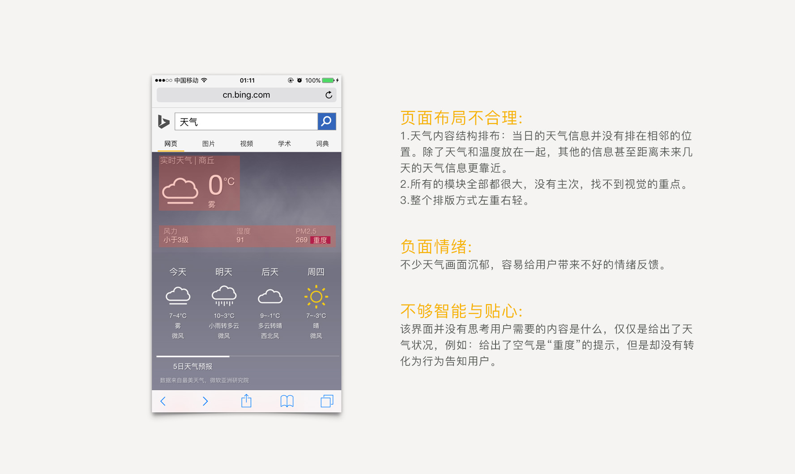

重设计天气搜索的页面，使其满足用户在手机上搜索的体验。
用户对天气的哪些信息比较关注？怎样才能快速的满足用户搜索的需求？
用户在搜索天气之前，都有一个搜索前提，抓住用户搜索的前提，就能更容易满足用户的需求。
在纷杂的天气信息中，数据可视化也是重要的一环，应该提供清晰明了的数据展示。
设计过程

竞品分析
在三者中，谷歌关注当日的天气，而百度和搜狗两者关注的都是今日＋未来一周的天气。但是三者，没有一个使用了情景化设计。因为百度既想要突出温度，也想要突出天气，导致整个内容模块找不到视觉重点。我个人觉得，选择一个突出，可以减少视觉的干扰。
设计思考与解决方式
关注用户的需求，将内容排布的更加清晰，富有逻辑。
少即是多，“天气”和“温度”两者需要有一强一弱的对比，着重突出一个。
对于特殊的天气，例如下雨或下雪天，向用户提供富有情感的提醒会让他们感到开心。
低保真原型
结合产品调研以及使用情况，选择突出天气情况。
采用一种情境化的模式（照片、状态模拟），让整个设计更加鲜活，让用户更有代入感。
不少用户对于pm2.5，空气湿润数字没有概念，因此简化这一部分，提供更易理解的内容。
图标设计和UI设计
扁平化、线性图标的流行，造成所有的界面千篇一律，缺乏创意。设计是一个轮回，选择轻质感图标，让设计更显精致。
当打开页面，背景动画自动播放，营造下雨景象，创造身临奇境般的体验。